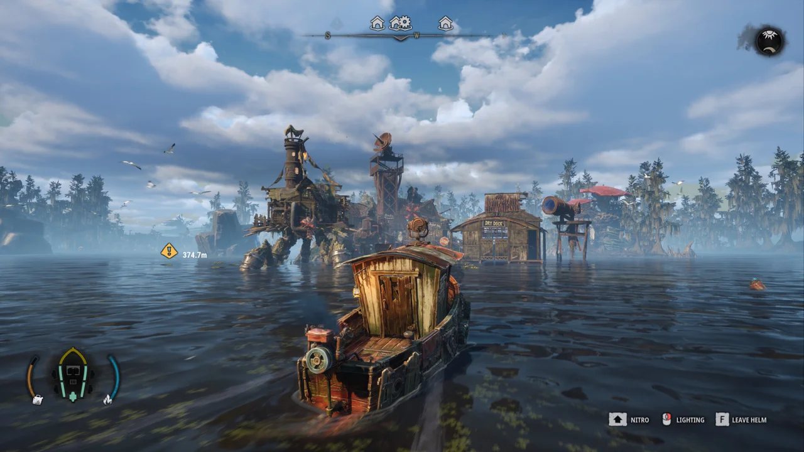

EARLY ACCESS · CHECKED 12 NOVEMBER 2026
Open the map and find the fishing spot you need
Press M with the default PC controls. Update #3 lets the same button open and close the map. For fishing locations, Morakie's external fan map has a fish Finder and selectable layers. If a mouse-side-button binding works on foot but fails aboard the boat, first compare the default keyboard binding.

Check the map binding on foot and aboard
- Install the current Steam update and launch the game again.
- Use the default M key to open the map, then press it again to close it. Update #3 explicitly added same-button closing.
- If you remapped the action to a mouse side button, compare M both on foot and while sailing. Restore a keyboard binding in the controls menu if that resolves the difference.
- If neither binding responds, record whether another interface was open and report the issue with your current version and binding.
In a November 11 player discussion, one person reported Mouse4 failing while sailing and another confirmed that M worked. This is a reported comparison to try. The thread does not establish a universal fix for every binding issue.
Official Update #3 map-control change · Player discussion of boat and mouse bindings (contains story spoilers).
Use the external fish finder
- Open Morakie's fan map using the link below.
- Reveal the relevant layer. The map starts with markers hidden to reduce spoilers.
- Open Finder, choose Fish and select the species you need. Use the zoom control to inspect the result.
- Compare its location with your in-game map, then confirm the school name on arrival before casting.
The map also exposes a fish log, collectible layers and a processing compendium. Its spoiler control covers story characters, Leviathan and puzzles. Reveal those layers only when you want those details.
Open the external DREADMOOR fan map. It opens in this tab and has its own storage and privacy behavior. Digital Vortex's Steam reply links this tool.
Match the map to your objective
For Father Matthias's fish request, start with the Bloodgill marker added in Update #2. The fan map is a fallback when the marker is unclear. Our Bloodgill guide explains lure choice and hand-in checks.
Some fish databases still label their information as October Demo data. Early Access updates have added spots and changed prices. Use your current school panel and quest counter to confirm the target. The external map's interface says its positions come from game data, but its landing page does not identify the exact build, so a missing marker should be checked against the current game.
Related DREADMOOR guides
Prepared from linked developer information and attributed player reports. Gameplay steps have not been personally tested. Early Access behavior may change after this check.